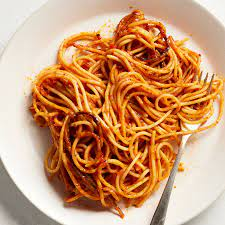

Spaghetti

Spaghetti is one of the most basic yet vital dinners for the everyday person. This recipe was built with convenience, cost, and flavor all in mind.
Expect a cooktime of around 60 minutes with prep and cleanup included.
Ingredients
- Choice of Noodles
- Spaghetti Sauce
- Ground Turkey
- Olive Oil
- Water
- Salt
- Bread
Steps
- Assemble the ingredients
- Bring water to a boil, add noodles and boil until soft.
- While noodles boil, preheat olive oil in a deep pan/skillet
- Brown meat in pan. Once browned, drain or clean excess oil from pan.
- Add spaghetti sauce to the pan and bring to simmering boil, cover and let simmer for 10 minutes.
- Strain noodles and serve meat sauce over noodles.